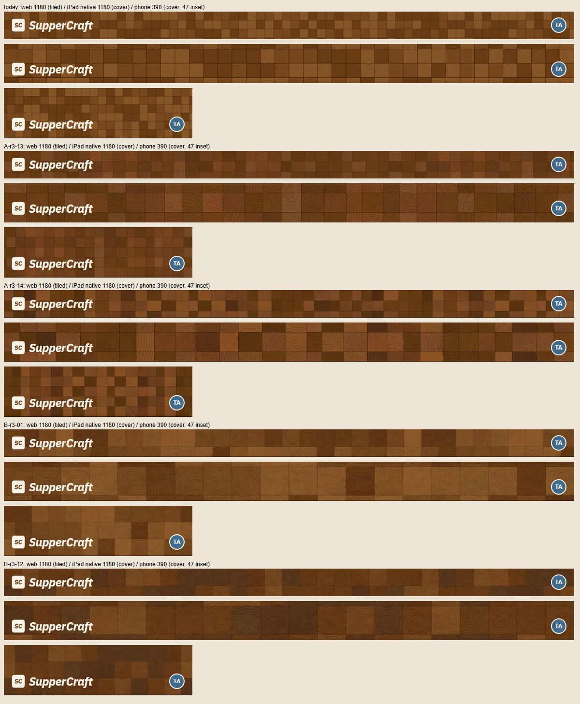
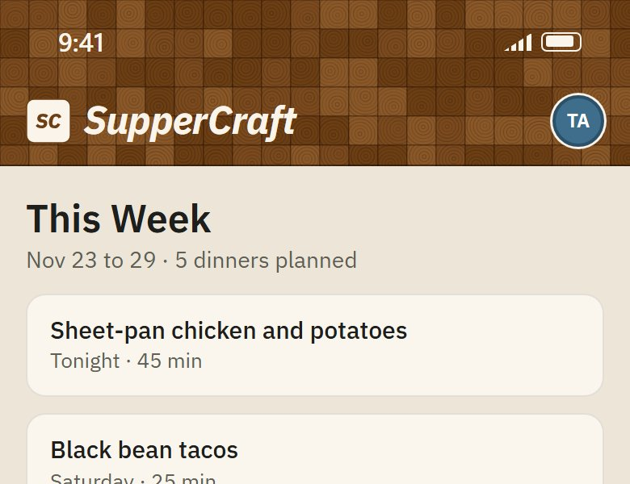
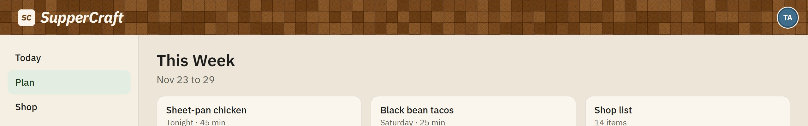

Header bar: first gallery (rounds 1-3)
11-27 16:30. 125 variants in 3 design lanes, plus research. Rounds 4-6 (merging the best parts) are running now.
Update 16:50: rounds 4-6 (the merge)
The best wood and the best layout, now in one bar: 33 boards. The outside panel now gives 7-8 (up from 5-7). Best: M-r6-01.
Rounds 4-6 gallery (phone) Rounds 4-6 on desktop (1280, 820, 1180, 2560)Rounds 7-8 (final polish) are running now.
Rounds 1-3: not ready to pick. An outside panel graded round 3 at 5-7 out of 10. Nothing reached 8. Their fixes are going into rounds 4-6.
The best so far, side by side
The best layout (SC mark, bold name, account at top right) on today's board and on the 4 best new boards. Each board is shown at web 1180, iPad 1180 and phone 390.

Best layout (L-r3-10)


Score trend
| Lane | Round 1-3 self-grade | Outside panel (r3) |
|---|---|---|
| A: refine today's wood | A-r3-13: 8.4 avg | 6-7 (wood too faint at real size) |
| B: bolder wood | B-r3-01: 8.0 | 6-7 (rings look stamped, rows cut off) |
| L: layout, type, logo | L-r3-10: 8+ | 7 (the cream SC tile is brighter than the name) |
As usual, the builders graded themselves about 1 point too high. Rounds 4-6 aim for 8+ from the panel.
All the variants
Lane A: refining today's wood (43 boards) Lane B: bolder wood (40 boards) Lane L: height, SC mark, typeface, account button (42 layouts) Research: what other apps put in their header bars (text)What the panel found (main points)
- The board doesn't tile the same on every device. iPhone and iPad stretch it, while web tiles it. To get "same background everywhere", the build must tile it on all three.
- The rows of blocks should fit the bar exactly (2 whole rows). No cut-off strips.
- The wood grain is too faint at real size (A) or looks stamped on (B). Rounds 4-6 fix both.
- Drop the soft shadow under the bar. The app's rules ban decorative shadows.